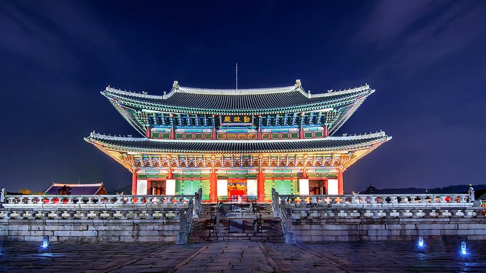
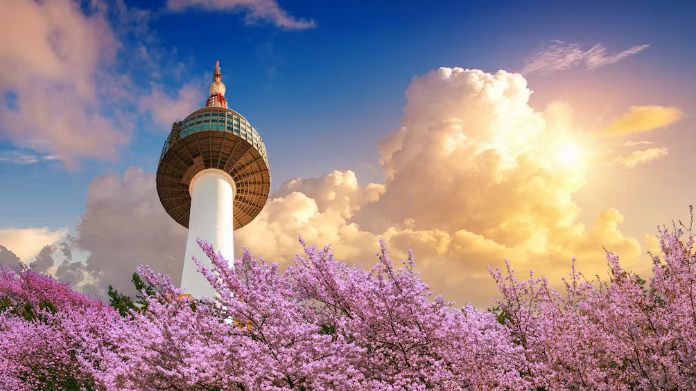
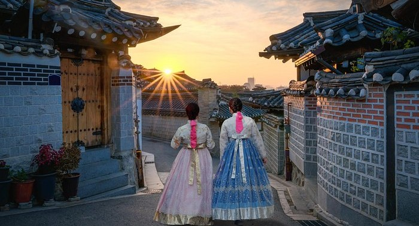

O Palácio Gyeongbokgung é o maior e mais importante dos "Cinco Grandes Palácios" construídos durante a Dinastia Joseon. Erguido originalmente em 1395 no norte de Seul, o local serviu como o principal centro do poder real e a residência oficial dos monarcas coreanos por séculos. Seu nome carrega o significado poético de "Palácio Grandemente Abençoado pelo Céu".

A N Seoul Tower (também conhecida como Torre Namsan) é um dos maiores cartões-postais de Seul. Inaugurada em 1980 no topo do Monte Namsan, a torre de comunicação e observação ergue-se a quase 480 metros acima do nível do mar, oferecendo uma vista panorâmica de 360 graus de toda a capital sul-coreana.

A Aldeia Hanok de Bukchon (Bukchon Hanok Village) é um dos bairros históricos mais charmosos de Seul. Localizada em uma colina entre o Palácio Gyeongbokgung e o Palácio Changdeokgung, a vila preserva centenas de casas tradicionais coreanas (chamadas hanoks) que datam da Dinastia Joseon. Diferente de um museu aberto, Bukchon é um bairro residencial real, onde o passado e o presente de Seul coexistem de forma única
